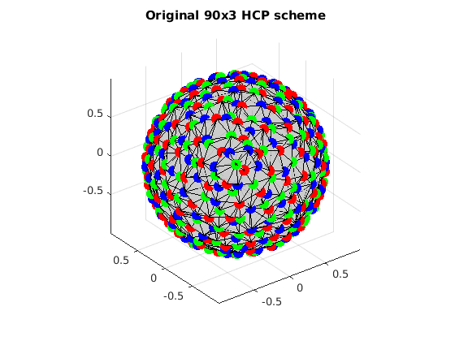
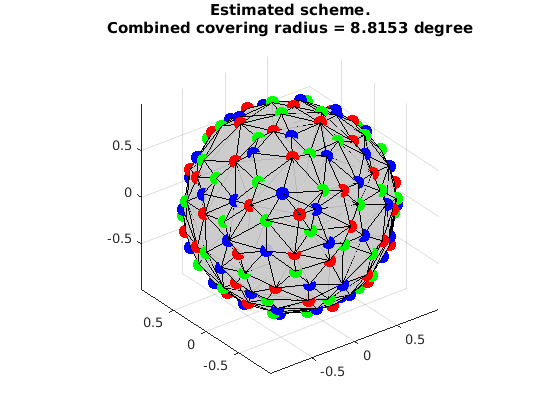

Uniformly select multi-shell subsets from a multi-shell scheme
This is a demo to uniformly separate multiple subsets from the multi-shell scheme in Human Connectome Project (HCP) using Mixed Integer Linear Programming (MILP)
Reference:
1. "Single- and Multiple-Shell Uniform Sampling Schemes for Diffusion MRI Using Spherical Codes", Jian Cheng, Dinggang Shen, Pew-Thian Yap, Peter J. Basser, IEEE Transactions on Medical Imaging, 2017.
2. "Designing Single- and Multiple-Shell Sampling Schemes for Diffusion MRI Using Spherical Code", Jian Cheng, Dinggang Shen, Pew-Thian Yap, MICCAI 2014.
Copyright (c) 2013, Jian Cheng (jian.cheng.1983@gmail.com)
Contents
read HCP scheme
grad_hcp_all{1}=ReadDirections('/home/jcheng/mywork/output/sampling/HCP_Q3/grad_b1000.txt');
grad_hcp_all{2}=ReadDirections('/home/jcheng/mywork/output/sampling/HCP_Q3/grad_b2000.txt');
grad_hcp_all{3}=ReadDirections('/home/jcheng/mywork/output/sampling/HCP_Q3/grad_b3000.txt');
VisualizeMultiShellScheme(grad_hcp_all{1}, grad_hcp_all{2}, grad_hcp_all{3});
title(['Original 90x3 HCP scheme']);
 extract 30x3 samples from 90x3 scheme
clear params grbParams params.numSamples = [30, 30, 30]; % set a lower bound, it can be 0 or covering radius from an initial guess params.lbCost = [0.33,0.33,0.33,0.15]; % params.lbCost = [0,0,0,0]; params.w=0.5; % grb parameters % MIPFocus 1 grbParams.MIPFocus=1; grbParams.TimeLimit=600; grbParams.OutputFlag=true; % grbParams.DisplayInterval=1; % run [grad,grb, indexMatrix] = OptimalSamplingMultiSubsetsFromDifferentSets(grad_hcp_all, params, grbParams); % the selected indices for each shell index_1=find(indexMatrix{1}==1); index_2=find(indexMatrix{2}==1); index_3=find(indexMatrix{3}==1);
MIPFocus = 1
Academic license - for non-commercial use only
Optimize a model with 2649 rows, 274 columns and 8208 nonzeros
Variable types: 4 continuous, 270 integer (270 binary)
Coefficient statistics:
Matrix range [1e+00, 2e+00]
Objective range [2e-01, 5e-01]
Bounds range [1e-01, 1e+00]
RHS range [3e+00, 3e+01]
Presolve time: 0.01s
Presolved: 2649 rows, 274 columns, 8208 nonzeros
Variable types: 4 continuous, 270 integer (270 binary)
Presolved: 274 rows, 2923 columns, 8482 nonzeros
Presolve removed 274 rows and 2923 columns
Root relaxation: objective 3.882960e-01, 680 iterations, 0.03 seconds
Nodes | Current Node | Objective Bounds | Work
Expl Unexpl | Obj Depth IntInf | Incumbent BestBd Gap | It/Node Time
0 0 0.38830 0 178 - 0.38830 - - 0s
0 0 0.38830 0 184 - 0.38830 - - 0s
0 0 0.38830 0 188 - 0.38830 - - 0s
0 0 0.38830 0 191 - 0.38830 - - 0s
0 0 0.38830 0 191 - 0.38830 - - 0s
0 0 0.38830 0 193 - 0.38830 - - 0s
0 0 0.38830 0 191 - 0.38830 - - 0s
0 0 0.38830 0 200 - 0.38830 - - 0s
0 0 0.38830 0 189 - 0.38830 - - 0s
H 0 0 0.2400000 0.38830 61.8% - 0s
0 0 0.38830 0 183 0.24000 0.38830 61.8% - 0s
H 0 0 0.2428519 0.38830 59.9% - 1s
0 2 0.38830 0 180 0.24285 0.38830 59.9% - 1s
H 176 176 0.2440524 0.38830 59.1% 226 4s
H 230 223 0.2448611 0.38830 58.6% 193 4s
H 234 227 0.2448675 0.38830 58.6% 192 4s
241 224 0.33673 44 179 0.24487 0.38830 58.6% 191 5s
H 267 224 0.2453033 0.38830 58.3% 177 5s
468 417 0.30596 53 148 0.24530 0.38830 58.3% 151 10s
591 482 0.37847 14 247 0.24530 0.38830 58.3% 134 16s
599 487 0.37361 16 237 0.24530 0.38830 58.3% 134 21s
669 531 0.37371 19 237 0.24530 0.38830 58.3% 131 26s
762 634 0.35826 26 208 0.24530 0.38830 58.3% 125 30s
905 731 0.31388 35 173 0.24530 0.38830 58.3% 117 35s
984 781 0.37895 9 248 0.24530 0.38830 58.3% 115 41s
1099 869 0.35599 24 183 0.24530 0.38830 58.3% 110 45s
1142 902 0.35316 17 270 0.24530 0.36921 50.5% 115 50s
1163 917 0.26780 69 270 0.24530 0.36881 50.4% 116 59s
1164 921 0.36801 56 269 0.24530 0.36881 50.3% 119 60s
1708 1203 0.35933 61 252 0.24530 0.36383 48.3% 114 66s
1833 1234 0.34061 67 228 0.24530 0.36279 47.9% 112 71s
1845 1237 0.34041 68 225 0.24530 0.36279 47.9% 112 77s
2287 1394 0.25886 88 68 0.24530 0.36106 47.2% 108 86s
2698 1481 infeasible 78 0.24530 0.35999 46.8% 105 94s
2749 1481 0.34747 66 235 0.24530 0.35896 46.3% 104 95s
3918 1901 0.33343 74 205 0.24530 0.35689 45.5% 99.2 100s
4393 2167 0.33738 71 217 0.24530 0.35608 45.2% 96.6 111s
4650 2293 0.32520 70 211 0.24530 0.35545 44.9% 96.0 115s
4896 2411 0.31401 73 165 0.24530 0.35514 44.8% 94.4 123s
5350 2680 0.32393 73 195 0.24530 0.35468 44.6% 94.3 125s
5590 2821 0.32411 73 193 0.24530 0.35468 44.6% 93.7 133s
6014 3069 infeasible 75 0.24530 0.35413 44.4% 93.0 135s
6285 3214 0.34174 69 228 0.24530 0.35407 44.3% 92.5 143s
6578 3405 0.34298 70 236 0.24530 0.35380 44.2% 91.1 152s
6864 3562 0.34825 64 232 0.24530 0.35363 44.2% 90.4 156s
7168 3708 0.32945 65 207 0.24530 0.35353 44.1% 90.2 166s
7479 3924 0.34595 64 223 0.24530 0.35328 44.0% 89.9 175s
7767 4071 0.34268 68 224 0.24530 0.35311 43.9% 89.5 184s
8096 4245 0.34902 65 235 0.24530 0.35302 43.9% 89.3 187s
8418 4439 0.34654 66 226 0.24530 0.35276 43.8% 88.9 191s
8593 4546 0.34238 67 219 0.24530 0.35265 43.8% 88.7 198s
9445 5061 0.33150 75 209 0.24530 0.35225 43.6% 87.5 209s
9955 5287 0.32819 76 184 0.24530 0.35200 43.5% 86.9 216s
10409 5554 0.34429 65 223 0.24530 0.35183 43.4% 86.7 227s
11149 5937 0.34245 68 218 0.24530 0.35161 43.3% 85.5 232s
11859 6326 0.28950 84 126 0.24530 0.35132 43.2% 84.7 240s
12593 6832 0.31327 78 180 0.24530 0.35108 43.1% 83.9 248s
13277 7168 infeasible 75 0.24530 0.35102 43.1% 83.1 250s
14188 7700 0.31776 74 191 0.24530 0.35079 43.0% 82.5 258s
15043 8181 0.33841 65 221 0.24530 0.35029 42.8% 82.0 270s
17081 9368 0.34399 63 221 0.24530 0.34977 42.6% 80.5 279s
17994 9857 0.33757 66 214 0.24530 0.34958 42.5% 80.2 283s
18922 10385 infeasible 87 0.24530 0.34931 42.4% 80.1 294s
20000 11022 0.31568 75 188 0.24530 0.34912 42.3% 79.4 304s
20701 11383 0.33299 66 216 0.24530 0.34907 42.3% 79.1 315s
21868 12033 0.34407 66 214 0.24530 0.34876 42.2% 78.8 320s
23005 12677 0.34139 67 213 0.24530 0.34848 42.1% 78.4 329s
24216 13333 0.32214 72 186 0.24530 0.34818 41.9% 78.0 343s
H24451 13473 0.2453033 0.34816 41.9% 78.0 343s
24779 13578 0.30193 76 135 0.24530 0.34810 41.9% 77.9 352s
25878 14193 0.33503 72 210 0.24530 0.34796 41.8% 77.4 361s
26805 14679 0.32068 67 210 0.24530 0.34784 41.8% 77.5 368s
27950 15259 0.31320 82 179 0.24530 0.34759 41.7% 77.3 376s
28927 15785 0.34027 65 215 0.24530 0.34741 41.6% 77.0 388s
30478 16604 0.28296 76 129 0.24530 0.34720 41.5% 76.3 394s
31293 16991 0.33997 65 231 0.24530 0.34704 41.5% 76.2 404s
32408 17578 0.33734 68 212 0.24530 0.34686 41.4% 76.1 409s
33753 18309 0.28921 84 125 0.24530 0.34672 41.3% 75.7 415s
34651 18782 0.34376 68 227 0.24530 0.34660 41.3% 75.6 426s
35951 19452 0.34030 71 208 0.24530 0.34648 41.2% 75.3 434s
37304 20199 0.32439 76 199 0.24530 0.34629 41.2% 74.9 437s
38428 20771 0.31272 74 182 0.24530 0.34610 41.1% 74.9 443s
39669 21446 0.32893 70 205 0.24530 0.34604 41.1% 74.7 452s
40774 22081 0.32437 71 214 0.24530 0.34585 41.0% 74.5 458s
41656 22544 0.32818 75 207 0.24530 0.34576 41.0% 74.3 466s
42748 23174 0.27776 79 120 0.24530 0.34564 40.9% 74.2 471s
43797 23693 0.33174 69 226 0.24530 0.34552 40.9% 74.1 476s
44667 24099 0.34206 66 228 0.24530 0.34541 40.8% 74.1 480s
45680 24622 0.32981 68 214 0.24530 0.34535 40.8% 74.0 492s
46358 24908 0.31552 75 173 0.24530 0.34527 40.8% 73.9 502s
47652 25569 0.34197 69 229 0.24530 0.34512 40.7% 73.7 505s
48786 26128 0.30992 70 179 0.24530 0.34505 40.7% 73.5 510s
49739 26630 0.32950 69 199 0.24530 0.34495 40.6% 73.4 518s
50442 26943 0.33310 69 206 0.24530 0.34484 40.6% 73.4 526s
52435 27971 0.31412 78 172 0.24530 0.34472 40.5% 73.2 540s
54821 29298 0.33110 74 210 0.24530 0.34452 40.4% 72.9 545s
56060 29826 0.32992 74 197 0.24530 0.34440 40.4% 72.7 553s
57000 30303 0.34154 69 227 0.24530 0.34434 40.4% 72.7 560s
57559 30521 0.30759 80 178 0.24530 0.34430 40.4% 72.7 566s
58671 31032 0.33593 73 207 0.24530 0.34416 40.3% 72.5 570s
60638 31992 0.33873 71 221 0.24530 0.34399 40.2% 72.4 578s
61817 32621 0.32681 72 196 0.24530 0.34389 40.2% 72.2 582s
63024 33193 0.32974 70 223 0.24530 0.34380 40.2% 72.0 586s
63551 33385 0.32449 76 194 0.24530 0.34376 40.1% 72.0 595s
64676 33956 0.33517 67 212 0.24530 0.34366 40.1% 71.8 600s
Cutting planes:
Clique: 94
MIR: 19
StrongCG: 154
Flow cover: 159
Zero half: 1
Explored 65647 nodes (4712674 simplex iterations) in 600.02 seconds
Thread count was 8 (of 8 available processors)
Solution count 7: 0.245303 0.245303 0.244868 ... 0.24
Time limit reached
Best objective 2.453033102693e-01, best bound 3.436474180708e-01, gap 40.0908%
visualize the result
VisualizeMultiShellScheme(grad{1},grad{2},grad{3});
title({'Estimated scheme.', ['Combined covering radius = ', num2str(CoveringRadius([grad{1};grad{2};grad{3}])*180/pi), ' degree']});
